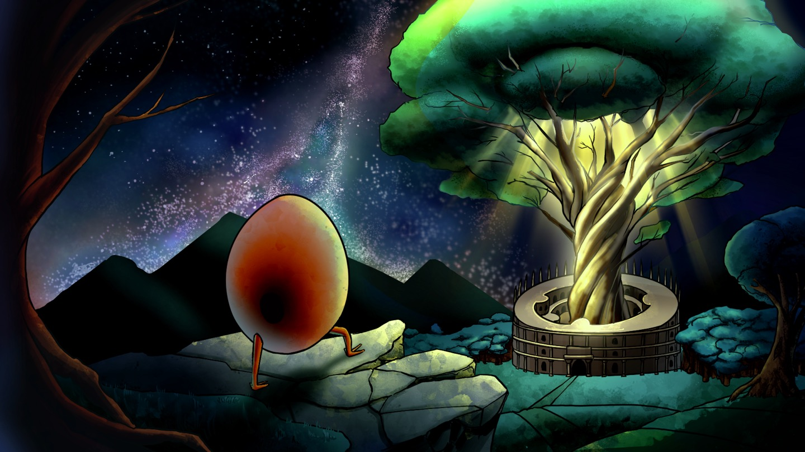

01 / Deckbuilding Roguelike
BENEDICT OF SINS
베네딕트 오브 신즈
PROJECT OVERVIEW
죄라는 것은 정말로 나쁘기만 한가?
이 질문에서 시작한 <베네딕트 오브 신즈>는 죄를 무조건 배척하는 대신, 인간의 욕망과 절제 사이에서 자신만의 중용을 찾아 나서는 덱 빌딩 로그라이크 게임입니다.
게임은 총 8개의 챕터로 구성되며, 각 챕터는 서로 다른 죄와 철학적 주제를 다룹니다. 플레이어가 단순히 이야기를 읽는 데 그치지 않고, 카드 선택과 전투 규칙을 통해 각 주제가 만들어내는 갈등을 직접 경험하도록 설계했습니다.
- TYPE
- 팀 프로젝트
- TEAM
- EGGQUIRE
- ROLE
- 팀장 · 게임 기획 · 시스템 구현 · UI 제작 · 내러티브 및 콘셉트
- GENRE
- Deckbuilding Roguelike
DESIGN / SYSTEM
설계와 구현
8개의 죄, 8개의 규칙
<베네딕트 오브 신즈>에는 총 8개의 챕터가 있습니다. 각 챕터는 하나의 죄를 중심으로 독립적인 덱 구조와 전투 규칙을 가집니다.
플레이어는 챕터마다 새로운 카드 조합과 자원 관리 방식을 익혀야 하며, 이전 챕터에서 유효했던 전략이 다음 챕터에서는 오히려 위험으로 작용할 수 있습니다. 이를 통해 죄를 단순한 선악의 대상으로 규정하지 않고, 상황과 정도에 따라 가치가 달라지는 힘으로 표현하고자 했습니다.
각 챕터의 주제는 배경 설정이나 대사에만 머무르지 않습니다. 카드의 효과, 적의 행동 패턴, 보스의 기믹과 전투의 승리 조건까지 하나의 주제를 중심으로 연결하여, 플레이어가 규칙을 이해하는 과정 자체가 곧 해당 죄를 해석하는 과정이 되도록 설계했습니다.

텅 빈 존재, 계란
주인공인 계란은 그 속이 텅 비어 있습니다. 어떠한 성질도 정해지지 않은 백지와 같은 존재이며, 역설적으로 비어 있기 때문에 무엇이든 담고 무엇으로든 변화할 수 있습니다.
계란은 여정을 거치며 각 세계의 죄와 욕망을 마주하고, 플레이어의 선택에 따라 서로 다른 가치와 능력을 받아들입니다. 즉, 계란의 성장은 단순한 능력치 상승이 아니라 플레이어가 어떤 선택을 반복했는지를 보여주는 정체성의 형성 과정입니다.
그러나 정체를 알 수 없는 부름에 이끌려 여정을 시작한 계란에게는 스스로도 기억하지 못하는 과거가 존재합니다. 세계를 통과할수록 계란이 비어 있는 이유와 각 죄의 세계가 연결된 진실이 점차 드러납니다.

신화의 세계
각 챕터는 서로 다른 신화와 문화권의 상징을 재해석하여 구성했습니다. 신화 속 인물과 괴물, 종교적 상징을 그대로 재현하는 대신, 각 챕터가 다루는 죄의 성질과 연결해 새로운 세계관과 적대 세력으로 재구성했습니다.
같은 죄라도 문화와 시대에 따라 전혀 다른 의미로 해석될 수 있다는 점에 주목했으며, 각 신화의 상징이 가진 원형적 이미지를 카드 효과와 전투 기믹에 반영했습니다.
이를 통해 챕터마다 시각적 분위기와 서사적 배경뿐 아니라 플레이 방식까지 달라지도록 설계했습니다. 플레이어는 서로 다른 신화 세계를 여행하며 죄를 처벌해야 할 악이 아니라, 인간과 세계를 움직이는 양면적인 욕망으로 마주하게 됩니다.

MEDIA GALLERY
스크린샷


VIDEO
플레이 영상
ROLE / RESPONSIBILITY
담당 작업
팀장으로서 핵심 주제와 세계관, 8개 챕터의 시스템, UI와 카드·전투 구현 전반을 담당했습니다.
-
01
핵심 주제와 세계관 정의
‘죄와 중용’이라는 핵심 주제를 바탕으로 세계관, 메인 스토리와 캐릭터 설정을 구성했습니다.
-
02
기믹 및 시스템 기획
8개 챕터의 전투 규칙과 덱 구조, 적 및 보스 기믹을 전반적으로 기획했습니다.
-
03
UI 기획 및 구현
전투와 게임 진행에 필요한 UI를 기획하고 직접 구현했습니다.
-
04
시스템 구현
카드, 전투, 턴 진행, 적 행동 등 게임의 전반적인 시스템을 구현했습니다.